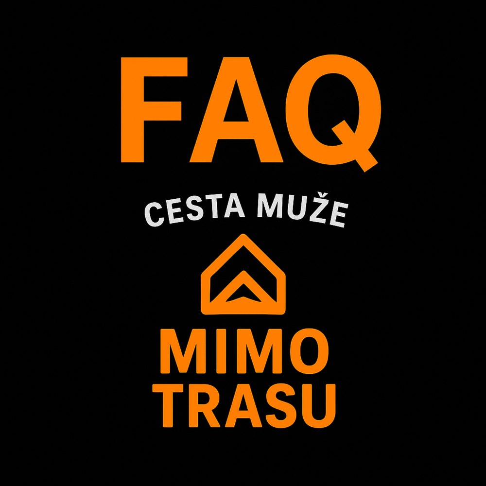

Často kladené otázky
Často kladené otázky na webu Mimo trasu
Nejčastější dotazy – často kladené otázky
Odpovědi na často kladené otázky o webu Mimo trasu, stoicismu, Red Pill i chlapské cestě. Pro každého, kdo hledá smysl.
O čem je vlastně web Mimo trasu?
O chlapské cestě, která není rovná ani jednoduchá. Je o hledání klidu, odpovědnosti a pravdy. Bez keců. Bez pozlátek.
Pro koho je tenhle web?
Pro chlapy, co už nechtějí žít podle očekávání ostatních. Pro ty, co chtějí najít směr, začít znovu nebo se jen zastavit.
Proč se to jmenuje Mimo trasu?
Protože nejlepší věci v životě často najdeš právě tam, kde nevede mapa. Když se odchýlíš od toho, co se čeká.
Co je hlavním tématem webu?
Stoicismus, Red Pill, mužský vývoj, smrtelnost, disciplína, osobní restart. Všechno, co souvisí s opravdovou změnou.
Co tady nenajdu?
Povrchní motivaci, pozitivní citáty bez obsahu nebo rady typu „buď vděčný a bude líp“.
Píšeš to všechno sám?
Jo. Každý text je osobní. Není to převzaté z knihy. Je to prožitý, vybojovaný a promyšlený.
Co je to stoicismus?
Filozofie, která tě učí nerozpadnout se, když se všechno kolem hroutí. Vědomý přístup k tomu, co ovlivníš. A klid vůči tomu, co neovlivníš.
Co znamená Red Pill?
Otevřít oči. Přestat si lhát. Přijmout realitu takovou, jaká je – ne jakou ji chceme mít. A žít podle pravdy, i když bolí.
Najdu tu něco o vztazích?
Jo. Ale ne romantický návody. Spíš pohled chlapa, který už ví, co je zodpovědnost, hranice a klid. A jak to souvisí se ženami.
Proč řešíš smrt (Memento Mori)?
Protože až smrt ti ukáže, co je v životě fakt důležité. Když si uvědomíš, že máš omezený čas, přestaneš ho plýtvat.
Máš nějaký stoický deník?
Tady na webu ne, ale mám tady tipy, jak si stoický deník začít psát i s otázkami, na které by ses měl zaměřit.
Jak začít se změnou?
Malý krok. Každý den. Často stačí vstát o hodinu dřív, přestat scrollovat a napsat si, co chceš ten den udělat jinak.
Můžu ti napsat?
Jo. Když to bude mít smysl, odpovím. Nehledám komunitu, ale skutečný spojení. A to začíná jednou zprávou.
Budeš přidávat další články?
Jasně. Ale jen když mám co říct. Nejedu na kvantitu. Každý text je promyšlený, testovaný životem. Ne marketingem.
Co mám dělat, když jsem úplně na dně?
Přestat hrát hru ostatních. Začít s jedním krokem. Přestat si lhát. A uvědomit si: že jsi na dně, je často začátek cesty vzhůru.
O stoicismu píšu víc na stránce Stoicismus .
Pokud tě zajímá můj příběh, začni na stránce Kdo jsem .
Více o filozofii stoicismu najdeš také na Wikipedii.
